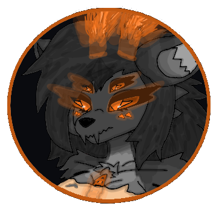

Leisure & Culture - Быт и Культура -
Self-Care & Body Maintenance : Само-Уход и Поддерживание Тела :
SheFurrs deeply value self-care. Light brushing of fur, self-licking, and grooming serve as hygiene and medical maintenance. They clean their eyes by licking for precise purification. Scars are considered marks of beauty, experience, and survival. Cleanliness is essential, they dislike dirtyness on their bodies. Teeth require no brushing, saliva naturally cleans them. Grooming is crucial - both self-licking and specialized tools are used. Their movement style is predatory, yet feminine, with softy stretches and fluidy body control. ШеФур глубоко ценят само-уход. Лёгкое расчесывание шерсти, само-облизывание, и груминг служат гигиеной и медицинским уходом. Они очищают глаза облизыванием для точной и полной очистки. Шрамы считаются знаками красоты, опыта, и выживания. Чистота обязательна, они не любят грязь на своём теле. Зубы не требуют чистки, слюна естественно очищает их. Груминг крайне важен - используется и само-облизованием и специальными инструментами. Их стиль движений хищный, но женственный, с мягкими растяжками и плавным контролем тела.
Archive : Архив :
Archive is needed for fully preserving the complete life stories of every individual of the hives / colonies - it does not preserve the soul, but it preserves all informations. The Archive is also used as a source of information, meaning as a library - but far more advanced with saved all the colors all smells all sounds all thoughs and all feelings. Архив нужен для полного сохранения жизненных исторей каждой особи улья / колония - он не сохраняет душу, но сохраняет всю информацию. Архив также используется как источник знаней, то есть как библиотека - но гораздо более продивнутая с сохранением всех цветов всех запахов всех звуков всех мыслей и всех чувств.
The Archive works only directly with the queen - she adds most of the content there, but individuals can also access it themselves - they cannot change anything, only view it and explore. The Archive works only through resonant connections, not far distances only close ones - otherwise they would just be pillars + also they works for all SheFurrs not only for it's hive / colony members. Also if one part is damaged - information transfers to lower or intact sections. Архив работает только напрямую с королевой - она добавляет туда большую часть содержимого тут, но особи тоже могут получать доступ - они не могут ничего менять, только смотреть и изучать. Архив работает только через резонансные подключения, не на дальних дистанцеях а только на близких - иначе это были бы просто колоннами + также архивы работают для всех ШеФур а не только для членов конкретного улья / колоний. Если какая-то часть повреждена - информация переносится в нижние или целые секций.
Archives are the one of exceptions that SheFurrs never touch never break never destroy - regardless of whether it is their own archive or enemie's one. If it is an enemie's archive - then the hive / colony - that captured it, is obligated to transfer all information from that archive into their own. This is a fundamental rule among the all SheFurrs also for hive-less. Архивы это одно из исключений которое ШеФур никогда не трогают и не ломают или уничтожают - независимо от того их это архив или вражеский. Если это архив врага - улей / колония - захватившая его, обязана перенести всю информацию их этого архива в свой собственный. Это фундаментальное правило среди всех ШеФур включая без-ульевых.
IMPORTANT - the archive does not replace or copy an individual personalities- it only serves as a complete recording of memory about something. ВАЖНО - архив не заменяет и не копирует личности особей - он лишь служит полным записывающим хранилищем памяти о чём-то.
Physical Aesthetics : Физическая Эстетика :
SheFurrs admire leany, functional musculature. Scars are a core passion and a major part of their identity. Hairs are also part of physical aesthethics. They enjoy tactile affection and may visit care rooms, spaces for touch and social bonding. SheFurrs adore affection and caress. ШеФур восхищаются стройной, функциональной мускулатурой. Шрамы это центр привлекательности и важная часть их идентичностей. Волосы тоже являются частью физической эстетики. Им нравится тактильная нежность и они могут посещать комнаты ласки, места для тактильности и социального сближения. ШеФур обожают ласку и нежность.
Injuries : Ранения :
SheFurrs may injure each other physically and thath's normal - because it's creating experience and scars, and - because of SheFurrs predatorial logic. Only one rule is not to harm / injure - some specific areas and not injure each other intentionally or psychicaly, for specific individual with weaknesses or injuries - rule is not to harm them. Queens and youngers - don't participate in this in any ways, they are too important for SheFur. ШеФур могут физически ранить друг друга и это нормально - потому что это создаёт опыт и шрамы, и - из-за хищной логики ШеФур. Есть только одно правило не вредить / ранить - некоторые специфические зоны и не наносить ранения намеренно или психические, для специфических особей с слабостями и травмами - правило не наносить им вред. Королевы и молодняк - не участвуют в этом никак, они слишком важны для ШеФур.
Social Behavior : Социальное Поведение :
SheFurrs are highly social within their hives / colonies and among their sisters. They frequently: communicate, interact, and maintain physical contacts. However, each individual is unique by personality, some prefer different interests or even solitude. ШеФур очень социальны внутри своих ульев / колоней и среди своих сестёр. Они часто: общаются, взаимодействуют, и поддерживают физические контакты. Однако, каждая особь уникальна по личности, некоторые предпочитают другие интересы или даже одиночество.
Daily Activities : Ежедневная Активность :
Individuals often engage in hive / colony tasks and mutual care. Scars are practiced frequently, even during leisure time. Особи часто занимаются задачами улья / колоний и взаимным уходом. Шрамы получаются часто, могут даже во время отдыха.
Art & Expression : Искусство и Самовыражение :
Drawing exists, but is rare. Some individuals create arts using natural biolumen pigments & natural colors or other things. Their arts is synesthetic, deeply complex, and often contains dense layers of information. Their writing system also carries massive informational density. They love to draw and write specifically with their bodies - with parts of their body, joints, tail, fingers - they don't have brushes. Рисование существует, но редкое. Некоторые особи создают искусство используя природные биолюмен пигменты и природные цвета или другие материалы. Их искусство синестетично, глубоко сложное, и часто содержит плотные слой информацей. Их письменная система также несёт огромную информационную плотность. Они обожают рисовать и писать именно телом, частями своего тела, суставами, хвостом, пальцами, у них нету кисточек.
Combat Art : Боевые Искусства :
SheFur posses a truly deep combat arts, ranging from physical bodily fighting and melee weapons to firearms. Mostly - SheFurrs adore melee weapons as part of their culture and art, but firearms also often become an art form. It is impossible to convey this artistry in words - SheFur are not combat masters, but artists with unreal virtuosity and grace. This artistry is a part of the: culture, aesthetics, beauty, and art of the SheFurrs. ШеФур обладают по настоящему глубокими боевыми искусствами, от физической телесной боёвки и холодного оружия до огнестрела. В основном - ШеФур обожают холодное оружие как часть своей культуры и искусства, но огнестрел тоже часто становится формой искусства. Передать этот виртуоз искусства невозможно словами - ШеФур не мастера боя, а художники с нереальной виртуозностью и грацией. Эта художественность является частью: культуры, эстетики, красоты, и искусства ШеФур.
Hive Symbolism : Символизм Улья :
Every SheFur hive has it's own symbolic banner. Colonies are simply colonies of hives - and therefore they always march under the banner of their hive as standard-bearers. SheFurrs use only light banners - no flags, no heavy symbolism, and no showing off, only honest, lightweight banners. Каждый улей ШеФур имеет свой собственный символический баннер. Колоний это просто колоний ульев - и поэтому они всегда идут под баннером своего улья как знаменосцы. ШеФур используют только лёгкие баннеры - никаких флагов, никакой тяжёлой символики, и никакой показухи, только честные, лёгкие баннеры.
Banners : Баннеры :
Every hive has it's own banner. A banner always looks like: worn, uneven, partially torn leather-fur cloth, and in the center of it - there is a symbol. The symbols can be: orange blood, a pawprint and small pawprints, maw with fangs, five eyes, chakram, and many many other simple types like these. The banners simply hang at the hives / colonies on the outer walls near the entrances, and also inside the hives / colonies in the queen's chamber. Каждый улей имеет свой собственный баннер. Баннер всегда выглядит как: изношенная, неровная, частично порванная кожно-шерстяная ткань, а в центре него - символ. Символами могут быть: оранжевая кровь, отпечаток лапы и маленькие лапы, пасть с клыками, пять глаз, чакрам, и множество других простых типов как эти. Баннеры просто висят на ульях / колониях на внешних стенах возле входов, а также внутри ульев / колоней в камере королевы.
Banners can be dyed in different colors. Баннеры могут быть открашены в разные цвета.
Writing System : Письменная Система :
SheFur possess a written language. It is used mainly for crafting elite armors and elite weapons inscriptions, and nearlly don't used anywhere else. The script is extremely complex and effectively impossible for other races to translate. Writing is rare in daily life. ШеФур обладают письменностью. Она используется главным образом для создания надписей на элитной броне и элитном оружий, и больше почти нигде не используется. Письменность чрезвычайно сложная и фактически невозможная для других рас и переводу. Письменность редкая в повседневной жизни.
Cooking & Food : Кулинария и Пища :
Cooking is minimal. Their biology allows them to safely consume any biological structures without poisoning or parasites. They are weak in culinary skills, but may experiment for new flavors or personal skill. They have some culinaries - all info about culinaries can be found on SheFur Weaponry Stuff Page. Кулинария минимальная. Их биология позволяет им безопасно потерблять любые биологические структуры без отравления или паразитов. Они слабы в кулинарных навыках, но могут экспериментировать ради новых вкусов или личного навыка. Они имеют некоторую кулинарию - вся инфа об кулинарий находится на странице ШеФур Вооружение Всякое.
Craftsmanship : Ремесло :
Craftsmanship, apprenticeship, and manual mastery form the core of SheFur culture. Everything - hives / colonies, clothing, armor, weapons, turrets, and stuff - is created by SheFurrs themselves with tools. Many individuals possess extensive experience in manual works. Ремесло, ученичество, и ручное мастерство формируют основу культуры ШеФур. Все - ульи / колоний, одежда, броня, оружие, турели, и всякое - создаётся самими ШеФур с помощью иснтрументов. Многие особи обладают обширным опытом в ручной работе.
Foraging : Собирательство :
SheFurrs don't use: backpacks, bags, boxes, or pots. For transporting and carrying objects, SheFurrs use baskets. The baskets are handmade from dense dried silk produced by SheFurr's larvae, after which they are woven like Earth's baskets. The baskets look similar to normal baskets, but are more elastic and have light orange and brownish colors. Some baskets have a woven lid, baskets can be attached to some riding mounts & pets. ШеФур не используют: рюкзаки, сумки, коробки, или котелки. Для переноса и транспортировки предметов, ШеФур используют корзины. Корзины изготавливаются вручную из плотного высушенного шёлка производимого личинками ШеФур, после чего они сплетаются как Земные корзины. Корзины выглядят похожими на обычные, но более эластичные, и имеют светло-оранжевые и коричневатые оттенки. Некоторые корзины имеют сплетённую крышку, корзины можно крепить к некоторым ездовым животным и питомцам.
Knowledge Storage & Death Cares : Хранение Знаней и Услуги Похоронения :
SheFurrs don't keep personal diaries. The hives / colonies - contains archive zones where individuals resonate and store information collectively. Death cares are very variable from hive to hive - some hives create mummies, some just eat the corpses, some use the corpses for resourses. But always when hive's sister dies, SheFurrs "saving" all information about her in their archives - all information from the birth to death / all history. ШеФур не ведут личные дневники. Ульи / колоний - содержат архивные зоны где особи резонируют и коллективно сохраняют информацию. Услуги похоронения сильно различаются от улья к улью - некоторые ульи создают мумий, некоторые просто поедают тела, некоторые используют тела как ресурс. Но всегда когда умирает сестра улья, ШеФур "сохраняют" всю информацию о ней в своих архивах - вся информация от рождения до смерти / всю историю.
Aesthetics & Decoration : Украшения и Декораций :
SheFurrs decorate their small living room-chambers individualy by their own personality. Decoration is basiclly minimal and depends on: personality, caste, age and experience. ШеФур украшают свои маленькие жилые камеры-комнатки индивидуально в соответствий со своей личностью. Украшения обычно минимальные и зависят от: личности, касты, возраста, и опыта.
Beauty Standards : Стандарты Красоты :
Beauty = scars, martial skill, experience, light musculature, hair, and femininity. Accessories is rare - but may include: metal earrings, arm-bands, long socks worn under armor or clothing, and a muzzle - but rarely personaly and basicly used as a part of isolation punishment. SheFurrs also often wear light leather fingerless gloves, especially favored by combat individuals and free blades. Predatory nature, orange and yellow colors, skills and abilities, battle beauty as an art, and cuddling between individuals is not only normal - but also an abstract part of beauty. Also queens can use this accessories. Красота = шрамы, боевое мастерство, опыт, лёгкая мускулатура, волосы, и женственность. Аксессуары редки - но могут включать: металические серьги, руковички, длинные носки под бронёй или одеждой, и намордник - редкий и личный, в основном как часть наказания изоляцией. ШеФур также часто носят лёгкие кожаные перчатки без пальцев, особенно любимые боевыми особями и свободными клинками. Хищная натура, оранжевые и жёлтые цвета, навыки и способности, боевая красота как искусство, и объятия между особями это не только норма - но и является абстрактной частью красоты. Королевы тоже могут использовать эти аксессуары.
Accessories and some clothing can be dyed in different colors. Аксессуары и часть одежд могут быть окрашены в разные цвета.
Chemical Communication : Химическая Коммуникация :
Besides their main language, SheFurrs use chemical pheromone markers. These appear only as scents - but can function as entire serialized stories or complex synesthetic messages. Помимо основного языка, ШеФур используют химические феромональные метки. Они проявляются только как запахи - но могут функционировать как целые серийные историй или сложные синестетические сообщения.
Collecting & Personal Identity : Коллекционирование и Личная Идентичность :
Collecting, SheFurrs collect scars as personal history and experience. Their concept of collecting is abstract: they collect experience, knowledge, combat techniques, and skills. The more experience an individual has - the "better" she is considered. Коллекционирование, у ШеФур это сбор шрамов как часть личной историй и опыта. Их концепция коллекнионирования абстрактна: они собирают опыт, знания, боевые техники, и навыки. Чем больше опыта у особи - тем "лучше" она будет считаться.
Scent Personalization : Персонализация Запаха :
Many SheFurrs scent-mark their chamber-rooms with personalized chemical aromas & smells that they like. Многие ШеФур метят свой камеры-комнатки персональными химическими ароматами и запахами которые им нравятся.
Group Activities : Групповые Активности :
Care rooms and grooming groups, joint martial arts training, cooperative hive / colony - work, training duels - solo / paired / or groups, chemical scent-play groups for experimenting with pheromones, rest groups for shared relaxation, emotional and psychological support circles, gentle antennae-plays (Carefully), and much more. Комнаты ласки и группы груминга, совместные тренировки боевых искусств, кооперативная работа улья / колоний, тренировочные дуэли - одиночные / парные / групповые, группы химических игр с феромонами для экспериментов, группы отдыха для совместной релаксаций, эмоциональной и психологической поддержки, мягкие игры антеннами (Осторожно), и многое другое.
Individuals can also engage in solitary affection and dual affection in their chamber-rooms. Особи также могут заниматься одиночной тактильностью и парной тактильностью в своих камерах-комнатках.
Games - Игры -
Predatory games, predatory hide-and-seek (Hunt-style), predatory tag, light-hunting - catching light or biolumen spots. Queens don't participate in any of games, too many work they have. Хищные игры, хищные прятки(В стиле охоты), хищные салочки, лёгкая охота - ловля света и биолюменных пятен. Королевы не участвуют в каких либо играх, слишком много работы у них.
Psychological & Synchronization Games : Психологические и Синхронные Игры :
"Read-Through" - one sister must read another completely - personality, psychology, intent. "Mind-synchronization" - when two sisters synchronize their minds via antennae & resonance. "Resonant Plasticity" - two individuals mirror each other's movements and behavior perfectly. "Прочитать Насквозь" - одна сестра должна полностью прочитать другую - идентичность, психологию, намерения. "Синхронизация Разумов" - когда две сестры синхронизируют свой разумы через антенны и резонанс. "Резонансная Пластичность" - две особи идеально зеркалят движения и поведение друг друга.
Combat Games : Боевые Игры :
Duel games as playful combat, tail games, predatory play. SheFurrs can harm each other physicaly - but not criticaly and that's absolutly normal for them to get wounds and scars during this duels and combatings. Дуэльные игры как игривый бой, игры хвостами, хищная игра. ШеФур могут причинять друг другу физический вред - но не критичный и для них это абсолютно нормально получать раны и шрамы во время таких дуэлей и боевых игр.
Mounts & Pets - Ездовые и Питомцы -
SheFurrs have their own mounts & pets from the SheWorld biosphere. SheFurrs usually keep specific creatures as pets & mounts, but they are capable of taming almost any beings in SheWorld and use them for their purposes. SheFurrs are not masters of taming, yet with enough effort and determination - it is possible. Some rare individuals are skilled tamers, and some even breeding creatures or beings. All of this is normal and a part of SheFur culture. ШеФур имеют своих ездовых и питомцев биосферы ШеВорлд. ШеФур обычно держат конкретных существ как питомцев и ездовых, но ШеФур способны укротить почти любое существо в ШеВорлде и использовать его в своих целях. ШеФур не мастера укрощения, но если сильно постораться и хотеть - то это возможно. Некоторые редкие особи являются умелыми укротительницами, а некоторые вообще разводят существ. Всё это норма и часть культуры ШеФур.
Любимое ездовое животное ШеФур это ШеВолф - аналог варга. Любимое животное питомец ШеФур это. Любимое сельское животное ШеФур это.
Psychology - Психология -
SheFur Civilization Specialization : Специализация Цивилизаций ШеФур :
The Specialization of SheFur civilization is quite complex and consists of: pragmatism, adaptability, predatory nature, art of combats, caste & personal systems, and reactional behavior. Специализация цивилизаций ШеФур весьма сложная и состоит из: прагматизма, адаптивности, хищности, искусства боёвки, кастовой и личностной систем, и реакционерства.Overview : Обзор :
SheFurrs psychology is a fusion of hive-mind logic + individual personality. They are a warrior & adaptive species, with a culture and art of war deeply rooted in their evolution - but this does not mean that SheFurrs are basically violent. Most emotions are expressed firstly resonancelly and only then physically & chemically. IMPORTANT - that all the psyhology of SheFurrs described there is only basic psyhology of them - meaning is any individual have their own identity, so all psyhology is very changing from one to another individual, but all SheFurrs have the basics of psyhology. All SheFurrs from all castes (Not stages because stages are development of SheFurrs) also queens are individuals and have their own individuality. Also means that not all hives & colonies acting in same ways, NO - they very unique - that means they can have rare-specific hives with any changes in all psyhology. Психология ШеФур это сочетание логики разума улья и индивидуальной личности. Они вид воинов и адаптивных существ, с культурой и искусством войны глубоко укоренёнными в их эволюций - но это не означает что ШеФур по своей пирроде жестокие. Большинство эмоцей выражаются сначала резонансно и только потом физически и химически. ВАЖНО - всё описанное в психологий ШеФур это только их базовая психология - это означает что любая особь имеет свою собственную индивидуальность, поэтому психология сильно меняется от одной к другой особи, но у всех ШеФур есть общая базовая психология. Все ШеФур их всех каст (Не стадий потому что стадий это стадий развития ШеФур) также королевы являются индивидуалами и обладают собственной личностью. Это также означает что не все ульи / колоний действуют одинаково, НЕТ - они очень даже уникальные - то есть могут существовать редкие специфичные ульи с любыми изменениями в психологий.
IMPORTANT - that behaviors, expressions, moods, emotions - all of them can be different from one to other individual. ВАЖНО - что поведения, выражения, настроения, эмоций - всё это может отличаться от одной особи к другой.
Expression Mechanism : Механизм Выражения :
SheFur express their emotions, it's fast mechanism not emotions, like 1-2 seconds. The first and strongest layer of expression is purely - sensory-resonance multidimensional communication. After that comes the chemical expression of emotions. Resonance emotions of SheFurrs are the deep signatures that show the emotions itself. It is important that SheFur can transmit all emotions to each other, and do so extremely deeply and also synchronously that other individuals can really feel it, but only if the individual chooses to transmit or not and catch or not. The final layer of emotional expression is physical (Body-based and sounds). The antennaes, during negative emotions of SheFurrs - lowers like the ears of predators on defense mode - meaning the antennaes bend downwards and back toward the spine. ШеФур выражают свой эмоций, это быстрый механизм но не сами эмоций, типа 1-2 секунды. Первый и самый сильный слой выражения это чистая - сенсорно-резонансная многомерная коммуникация. После этого идёт химическое выражение эмоцей. Резонансные эмоций ШеФур это глубокие сигнатуры которые показывают саму эмоцию. Это важно то что ШеФур могут передовать все эмоций друг другу, и очень глубоко и даже синхронно так что другие особи действительно могут их чувствовать, но только если особь сама выбирает передавать или нет и принимать или нет. Последний слой эмоционального выражения это физический (Язык тела и звуки). Антенны, при негативных эмоциях ШеФур - опускаются как уши у хищников в защитном режиме - то есть антенны сгибаются вниз и назад к спине.
SheFurrs can freely express their emotions on all levels. The only rule - is not to create too much "noise" for the sensory systems of others. Hives usually do not suppress emotional expression, because individuals have the right to self-expression as long as they don't break hive logic. ШеФур могут свободно выражать свой эмоций на всех уровнях. Единственное правило - не создавать слишком много "шума" для сенсорных систем других. Ульи обычно не подавляют эмоциональное выражение, потому что особи имеют право на самовыражение пока они не нарушают ульевую логику.
SheFur emotions depends also on social environment. Their emotional Mechanism is: hive logic + individualism + sociality + emotionality. Эмоций ШеФур зависят также и от социального окружения. Их эмоциональный механизм состоит из: ульевой логики + индивидуализм + социальности + эмоциональность.
Also can be hided by individual by some reasons like non-social individual or just "I don't wanna to express", but hide the resonance signature is nearlly imposible - because of Romb-eye's visions. Также могут быть скрыты особью по разным причинам как несоциальная особь или просто "Я не хочу выражать", но скрыть резонансную сигнатуру почти невозможно - из-за виденей Ромб-глаза.
Eggs expression - is chemical and very simple. Выражение яйц - химическое и очень простое.
Larvae expression - is chemical and physical, larvae not using the resonance - because they need to study and learn it. Выражение личинок - химическое и физическое, личинка не использует резонанс - потому что им нужно изучить и освоить его.
Cocoon(Pupae) expression - is also chemical like eggs, but have light resonance signatures. Выражение кокона(Куколки) - также химическое как у яйц, но с лёгкими резонансными сигнатурами.
Nymph(Worker) expression - is the main basically - chemical, physical, and weaky resonance. Выражение нимфы(Работницы) - основное выражение - химическое, физическое, и слабенький резонанс.
Elites caste is simultaneously both a combats and a domestics, meaning that elites can naturally feel and understand both the combat emotional mechanism and the domestic one at the same time. Каста элитных одновременно и боевая и домашняя, это означает что элитные могут естественно чувствовать и понимать оба эмоциональных механизма боевой и бытовой одновременно.
Queens does not show their emotionallity streightlly, but they feel all emotions on extremly deeper layers in their individuality. Королевы не выражают свою эмоциональность напрямую, но они чувствуют все эмоций на чрезвычайно глубоких уровнях своей индивидуальности.
Hive-less SheFurrs : Без-Ульевые ШеФур :
Lone / hive-less SheFurrs have the same psychological concepts and are not "colder" just because they are alone. They are partially cold, but they express their emotions more deepy inside. Одинокие / без-ульевые ШеФур имеют те же психологические концепций и не становятся "холоднее" только потому что они одни. Они частично холодны, но выражают свой эмоций более глубже внутри себя.
Behavior: Поведение :
It is important that not every individual is like this, only mostly, because SheFurrs have individualism. SheFurrs are mostly: graceful - but predatorial, have predator-like behavior - roughness and directness, as well as predatory aesthetics and movements, and feminity. Это важно что не каждая особь такая, это лишь большинство, потому что у ШеФур есть индивидуализм. ШеФур в основном: грациозные - но хищные, имеют хищное поведение - грубость и прямоту, а также имеют хищные эстетики и движения, и женственность.
Core Emotions - Главные Эмоций -
Joy : Радость :
Joy exists especially in: larvae, nymphs, and nurses. Joy is: social life, caress, affection, understanding, friendship and connection, when something goes like individual expected and wanted to, and predatory-like games. Combat castes experience joy during battle - due to a genuine biological dependency on conflict & defense and hunt. Hive / colony-bound individuals - show calm domestic joy. Queens almost never show joy, their responsibility suppresses emotional expression. Радость выражена особенно у: личинок, нимф, и нянек. Радость это: социальная жизнь, ласка, нежность, понимание, дружба и связь, когда что-то происходит так как особь ожидала и хотела, а также хищные игры. Боевые касты испытывают радость в бою - из-за их генетической биологической зависимости на конфликте, защите и охоте. Особи привязанные к улью / колоний - проявляют спокойную домашнюю радость. Королевы почти никогда не показывают радость, их ответственность подавляет эмоциональное выражение.
Expression: smiling, widening of the eyes, energized movements, fast movements, more playfull and opened poses, little bit brighty biolumen, and sometimes predatory laughter. Выражение: улыбка, расширение глаз, энергичные движения, более игривые и открытые позы, немного ярче биолюмен, и иногда хищный смешок.
Sadness : Печаль :
Sadness is extremely strong when: something bad happens in the hive or sisters die. Sadness is: social life, understanding, loneliness, lost connections, when something goes not like individual expected and wanted to, and betrayality. Because all hive members are connected by resonance threads, losing a sister especially some connected individuals - feels like losing a piece of oneself. Combat castes feel sadness slightly less. Queens feel it much stronger - because they oversee the entire hive, and all individuals in their hive - is their daughters. They experience little burnouts basiclly and personaly. Печаль становится крайне сильной когда: происходит что-то плохое в улье или умарют сёстры. Печаль это: социальная жизнь, понимание, одиночество, потеря связей, когда что-то идёт не так как особь ожидала и хотела, и предательство. Поскольку все члены улья связаны резонансными нитями, потеря сестры особенно той с кем была сильная связь - ощущается как потеря части самой себя. Боевые касты чувствуют печаль немного слабее. Королевы чувствуют её немного сильнее - потому что они наблюдают за всем ульем, и все особи в улье - их дочери. Они переживают небольшие выгорания базовые и личные.
Expression: lowered antennaes, slowy movement, deeper immersion into oneself, drifting into thoughts, daydreaming, little bit weaky biolumen, more shying uncertain and closed poses, weaker vocal tones, SheFurrs rarely show tears and their tears are chemical pheromonal and not water-based - but during strong sadness they may have small bright-witish transparent tear-drops or full tears from all opened eyes 4-5, in cases of intense sadness - their mouth may tremble slightly. Выражение: опущенные антенны, медленные движения, более глубокое погружение в саму себя, уход в мысли, мечтательность, слабенький биолюмен, более застенчивые неуверенные и закрытые позы, слабые вокальные тоны, ШеФур редко показывают слёзы и их слёзы химические феромональные не из воды - но при сильной печали могут появляться маленькие слезинки и они ярко-беловатые прозрачноватые из всех открытыхы 4-5 глаз, при сильной печали - их рот может слегка дрожать.
Fear : Страх :
Fear exists. They fear: losing sisters / mother, die, losing the hive, being forgotten, being alone, the loss of oneself, the loss of hive logic, the loss of close ones, and the unknown and the incomprehensible. Combat castes have slightly less fear. Royal castes have more, they are responsible for everything and every individual in the hive / colony. Страх существует. Они боятся: потерять сестёр / мать, умереть, потерять улей, быть забытыми, быть одними, потерять себя, потерять ульевую логику, потерять кого-то близкого, и неизвестного и непонятного. Боевые касты испытывают страх немного слабее. Королевские касты больше, потому что они ответственны за всё и за каждую особь в улье / колоний.
Expression: lowered antennaes, widening of the eyes, heightened senses, cautious and smooth movements, careful shy poses, weaker vocal tones, little bit weaky biolumen, in fear the cartilage structures becomes hardened, and during strong fear - the heartbeat increases and small tear-drops may appear from all opened 4-5 eyes. Выражение: опущенные антенны, расширенные глаза, усиленные чувства, осторожные и плавные движения, аккуратные застенчивые позы, слабые вокальные тоны, слабенький биолюмен, при страхе хрящевые структуры становятся более жёскими, и при сильном страхе - увеличивается сердцебиение и могут появляться маленькие капли слезинок из всех открытых 4-5 глаз.
Anger : Гнев :
Anger is: revenge, hive protection, memory of fallen sisters, protection of one's personality and the individualism of the personality, hard misunderstanding, suppressing individualism annoys SheFurrs - but the destruction of hive logic annoys as well, direct invasioning to personal boundaries, self-expression - especially direct expression under helplessness, betrayality, theft, shameless or stright using, deception, ignoring - all of this can anger SheFurrs. Interestily, SheFurrs mostly don't care about humiliation or provocations, because SheFurrs are generally rough and do not have any physical sense of being "emotionally offended". They can hold grudges for a long time, but can forgive - SheFurrs basically don't love or use revenge by fallen / killing. Combat castes have slightly less anger, but more rough maners. Queens have much stronger anger - because every hive / colony member is a daughters to the queen. Гнев это: месть, защита улья, память о павших сёстрах, защита собственной личности и индивидуализма, сильное недопонимание, подавление индивидуализма раздражает ШеФур - но разрушение ульевой логики также раздражают, прямое вторжение в личные границы, самовыражение - особенно прямое выражение под беспомощностью, предательство, кража, бесстыдство или прямое использование, обман, игнорирование - всё это может вызывать гнев у ШеФур. интересно то что, ШеФур в основном не заботятся об унижений или провокациях, потому что ШеФур в целом резковатые и не имеют физического ощущения "эмоциональной обиды". Они могут долго держать обиду, но могут и прощать - ШеФур в целом не любят и не используют месть через убийства / раправы. Боевые касты испытывают гнем немного слабее, но обладают более грубыми манерами. Королевы испытывают гнем намного сильнее - потому что каждая особь улья / колоний является их дочерьми.
Expression: lowered antennaes, more twitchy and energetic movements, little bit brighty biolumen, cartilage structures becoming stiffy and hardy, frowning or narrowed look, sometimes slightlly opens mouth for showing teeth, reacting stance in poses, and increased focus on specific targets. Выражение: оущенные антенны, более дёрганые и энергичные движения, немного ярче биолюмен, хрящевые структуры становятся жёскими и твёрдым, нахумренность или суженный взгляд, иногда слегка приоткрытый род для демонстраций зубов, реагентная стойка в позах, и усиленная концентрация на целях.
Calm : Спокойствие :
Calm is: the standard behavior of SheFurrs inside hives / colonies with each other, and personal boundaries of the individual also give calms. Mostly common inside the hives / colonies / or individual's personal chamber-room. Спокойствие это: стандартное поведение ШеФур внутри ульев / колоней друг с другом, и личные границы особи также дают спокойствие. Наиболее распространено внутри ульев / колоней или в личной камере-комнатке особи.
Expression: normal and typical - meaning the simple usual behavior for SheFurrs inside hives / colonies. Выражение: нормальное и типичное - то есть обычное поведение ШеФур внутри ульев / колоней.
Affection & Caress : Нежность и Ласка :
Affection & caress is: trust, sisterhood and kinship of the hive / colony, social norm, deep bonds between individuals, sometimes love, sometimes desire. Affection & caress are normal for SheFurrs, regardless of castes, but they work only between sisters of the same hive / colony or genetic in basically. They usually are not considered as an invasioning to personal boundaries. It is important that the youngers - from egg to nymph(Worker) - also receive affection & caress, but not adult ones, rather social ones. The youngers do not participate in the affection & caress of adults. Queens usually do not get involved in these spheres - because they are too busy, however queens can enjoy affection & caress. Нежность и ласка это: доверие, сестринство и родство улья / колоний, социальная норма, глубокие связи между особями, иногда любовь, иногда желание. Нежность и ласка нормальны для ШеФур, независимо от касты, но работают только между сёстрами одного улья / колоний или генетики в основном. Они обычно не считаются вторжением в личные границы. Важно то что молодняк - от яйца до нимфы(Работницы) - тоже получают нежность и ласку, но не взрослую, а больше социальную. Молодняк не участвует в нежности и ласки взрослых. Королевы обычно не вовлекаются в эти сферы - потому что слишком заняты, однако королевы могут наслаждаться привязанностью и лаской.
Expression: more saliva, softness and smoothness in movements with playfulness, little bit brighty biolumen, playfulness in the eyes and a softer calmer gaze, improvement of sensory perception in all aspects, calming and satisfaction, as well as deep social bonds. Выражение: больше слюны, мягкость и плавность в движениях с игривостью, ярче биолюмен, игривость в глазах и мягкий спокойнный взгляд, улучшение сенсорного восприятия во всех аспектах, успокоение и удовольствие, а также глубокие социальные связи.
Surprise & Interest : Удивление и Интерес :
Surprise & Interest is: they can be interested by anything unknown - thats because SheFurrs love experience, interest drives exploration and adaptation, knowledge and studies, also depends by individual SheFurr's personal interests. Royals have surprises & interests - that is more strategic and more deepy-emotional. Interest is especially strong to queens - because they develop the hive's and genome lines. Удивление и интерес это: они могут интересоваться чем угодно неизвестным - потому что ШеФур обожаю опыт, интерес ведёт к исследованию и адаптаций, знаниям и обучению, также зависит от личных интересов конкретной особи ШеФур. У королевских удивление и интерес - более стратегические и более глубокие эмоционально. Интерес особенно силён у королев - потому что они развивают линию генома и улья.
Expression: increased interest in the eyes, little bit brighty biolumen, reacting stance in poses, enhancement of sensory perception for studying, bit of energiness in movements while remaining carefully, and focusing of the senses & gaze. Выражение: усиленный интерес в глазах, ярче биолюмен, реагентная стойка в позах, усиление сенсорного восприятия для изучения, немного энергетики в движениях при этом сохраняя осторожность, и концентрация чувств и взгляда.
Disgust : Отвращение :
Disgust is: very weaky almost dependent on individuals presonality, killing their own sisters by genome / hive / colony, hive / colony betrayality, unsanitary conditions both individual and hive / colony-wide, excessive cruelty and roughness cause moral disgust, and placing oneself personally above others - regardless of whether it is an individual or a hive / colony - causes disgust. They are not disgusted by: corpses, meat, blood, organs, feces, urine, and other chemical & biological "goodies". Disgust is nearby minimal, any individual can do what ever she wants to do - just don't over-step the borders of morality. Отвращение это: очень слабое и полностью зависит от самой личности особи, убийства своих сестёр по геному / улью / колоний, предательство улья / колоний, антисанитария как личная так и ульевая / колониальная, чрезмерная жестокость и грубость вызывают моральное отвращение, и ставление себя выше других - вне зависимости от того особь это или улей / колоний - вызывает отвращение. Они не испытывают отвращение к: трупам, мясу, крови, органам, фекалиям, моче, и другим химическим и биологически "вкусностям". Отвращение почти минимальное, любая особь может делать что угодно что она хочет - пока она не переступает границы морали.
Expression: lowered antennaes, weaker biolumen, deep inside as an emotional state, sometimes baring of teeth, sometimes squinting of the cheekbones and eyes, sharper - but careful movements, and sometimes rough directness toward the irritant. Выражение: опущенные антенны, слабенький биолюмен, грубокое внутреннее эмоциональное состояние, иногда оскал, иногда прищур скул и глаз, резкие - но осторожные движения, и иногда грубая прямота по отношению к раздражителю.
Loneliness : Одиночество :
Loneliness is: emotional loneliness, social loneliness and lack of communication, usually individuals choose loneliness by their path and personality rather than society, misunderstanding or ignor from the environment can give loneliness. Combat and hive-less individuals - have lowered feelings of loneliness, but they bit deeper. Queens does not really have loneliness in emotional sentences - they have loneliness like creative loneliness or deep loneliness. In principle - loneliness for SheFurrs is not critical and not a sentence - all individuals treat it normally, it's just that SheFurrs are social and they need sociality, and overall - loneliness can form even deeper emotions and understanding. However - such individuals in hives / colonies - are usually helped by other individuals regardless of castes, and nurses more often helping. Одиночество это: эмоциональное одиночество, социальное одиночество и отсутствие коммуникацей, обычно особи выбирают одиночество сами по своему пути и личности нежели чем из-за общества, недопонимание или игнорирование со стороны окружение тоже могут вызывать одиночество. Боевые и без-ульевые особи - испытывают одиночество слабее, но оно у них более глубокое. Королевы не имеют одиночества в обычном эмоциональном смысле - у них одиночество творческое и глубокое. В принципе - одиночество для ШеФур не критично и не является приговором - все особи относятся к нему нормально, это просто потому что ШеФур социальные и им нужна социальность, а в целом - одиночество может сформировать ещё более глубокие эмоций и понимание. Оданок - таких особей в ульях / колониях - обычно поддерживают другие независимо от касты, и чаще всего помогают няньки.
Expression: greater detachment of the individual from sociality, asociality and sometimes deviation - but this is also normal, frequent roughness and colder emotions, sometimes an indifferent expression of the face and eyes, and often causes indifference. Выражение: большее отстранённости от социальности, асоциальность и иногда отклонение - но это тоже нормально, частая резкость и более холодные эмоций, иногда безразличное выражение лица и глаз, и часто вызывают общую эмоциональную разницу.
Embarrassment : Смущение :
Basiclly nonexistent, but individuals may experience it by their individual & personal aspects. In basic principle - embarrassment for SheFurrs is not about social or affection plane, it is about hard misunderstandings and invasioning to personal boundaries of individual. Queens don't have emotional embarrassment, they have more strategical and deeper embarrassment. Практически отсутствует, но особи могут испытывать его по своим индивидуальным и личным причинам. В принципе - смущение для ШеФур не связано с социальной или эмоциональной сферой, оно связано с сильным недопонимание и вторжением в личные границы особи. Королевы не имеют эмоционального смущения, у них оно более стратегическое и глубокое.
Expression: lowered antennaes, little bit brighty biolumen, careful shy poses, weaker vocal tones, and averting of gaze. SheFurrs does not have embarrassment on face like redish zones. Выражение: опущенные антенны, ярче биолюмен, осторожные застенчивые позы, слабые вокальные тоны, и отведение взгляда. У ШеФур нет смущения на лице в виде красных зон аля румяны.
Suffering : Страдание :
SheFurrs can experience suffering sometimes, as an emotion or as physical pain or both or as emotional pain - but rarely - it's more about physical-nervous pains than emotion - but can be also deeper personaly. ШеФур могут иногда испытывать страдание, как эмоцию так и физическое иди оба одновременно или эмоциональную боль - но редко - чаще это физическая нервная боль чем эмоция - но может быть и глубоким личным.
Social Bonds - Социальные Связи -
Empathy & Sympathy : Эмпатия и Симпатия :
It's: deep understanding of someone else, emotional understanding. Inside the hives / colonies - very strong between SheFur sisters. Towards other hives / colonies / hive-less SheFurrs - almost none or minimal, but can be more emphatic. Towards other species & biosphere of SheWorld - normal because SheWorld is the home world for SheFurrs so emphaty to other species & biosphere is normaly. Also can be very strong, but towards SheFur mounts & pets. All castes have emphaty, also queens - but more deepy. Это: глубокое понимание другого, эмоциональное понимание. Внутри ульев / колоней - очень сильное между сёстрами ШеФур. По отношению к другим ульям / колоням / без-ульевым ШеФур - почти отсутствует или минимальна, но может быть более эмпатичной. По отношению к другим видам и биосфере ШеВорлд - нормальна потому что ШеВорлд это родной мир ШеФур и эмпатия к другим видам и биосфере естественна. Также эмпатия может быть очень сильной, но по отношению к ездовым и питомцам ШеФур. Все касты обладают эмпатией, включая королев - но у них более глубокая.
Compassion: exists, but mostly towards hive / colony - sisters. Сострадание: существует, но в основном направлено на сестёр улья / колоний.
Attachment : Привязанность :
Attachment inside the hives / colonies - is normal. Sisters can love sisters, can be deeply best-friends, can be like "family". Relationships between sisters of any castes - are common and normal, also between queen & royals. They don't have concept of sexual behaviors, but they love physical affections. Royal castes have extremely strong attachment to the hive / colony, and the hive / colony - to them. Привязанность внутри ульев / колоней - нормальна. Сёстры могут любить сестёр, могут быть глубокими лучшими подругами, могут быть как "семья". Отношения между сёстрами любых каст - обычны и нормальны, включая отношения между королевой и королевскими кастами. У них нет концепта сексуальных поведений, но они любят физическую нежность. Королевские касты имеют чрезвычайно сильную привязанность к улью / колоний, и улей / колония - к ним.
Trust : Доверие :
Trust exists strongly within the hives / colonies. Toward outsiders or none or +-. Toward royal castes strong, but dependent by many factors. Доверие существует сильно внутри ульев / колоней. К чужакам либо отсутствует либо +-. К королевским кастам сильное, но зависит от множества факторов.
Respect : Уважение :
They have their own hive-specific concept of respects. They respect experience more than status, also respect balance of strong individualism without breaking the hive-mind logic. They disrespect those who kills or killed hive / colony members, also disrespect very stronglly when individualism breaks the hive-mind logic and when hive-mind logic breaks individualism. У них есть свой ульевой специфичный концепт уважения. Они уважают опыт больше чем статус, также уважают баланс сильной индивидуальности без разрушения ульевой логики и разума. Они не уважают тех кто убивает или убил членов улья / колоний, также очень сильно не уважают когда индивидуализм разрушает ульевую логику и разум а также когда ульевая логика и разум разрушают индивидуализм.
They disrespect those who steal or take what belongs to others - but only in the sense of personal belongings of individuals, not property in general. They respect those who achieve their own: experience, possessions, or reputation through their own effort - and this applies even if an individual was born with certain advantages except experience. Они не уважают тех кто крадёт или берёт то что принадлежит другим - но только в смысле личных вещей особи, а не собственности в целом. Они уважают тех кто достигает своего собственного: опыта, личных вещей, или репутаций собственными усилиями - и это относится даже к тем кто родился с определёнными преимуществами кроме опыта.
Gratitude : Благодарность :
Gratitude is: for helping each other, for understanding each other, for birth by queen mother, for life, and for experience. Helping / living in the hive / colony - is a duty not a favor. They rarely express gratitude verbally. But they have gratitudes and very strongly. Благодарность это: за помощь друг другу, за понимание друг друга, за рождение от королевы матери, за жизнь, и за опыт. Помощь / жизнь в улье / колоний - это обязанность а не услуга. Они редко выражают благодарность словами но их благодарность очень сильная.
Guilt : Вина :
Guilt can be found to SheFurrs, but it's more individual personal zones - that founded by different factors. Guilt is: when an individual has done something so wrong that she blame themselve for it. This may be an accidental killing of someone, losing someone close, betraying someone, and several other factors. Can exists especially strong in royal castes & queens - because they controls all the hive / colony. Вина встречается у ШеФур, но это более индивидуальная личная зона - возникающая по разным причинам. Вина это: когда особь сделала что-то настолько неправильное что винит себя за это. Это может быть случайное убийство кого-то, потеля близкого, предательство кого-то, и многие другие факторы. Может существовать особенно сильной у королевских каст и королев - потому что они контролируют весь улей / колонию.
Expression: such individuals need support and understanding, which they receive. They are usually more sad and closed inside. Выражение: такие особи нуждаются в поддержке и пониманий, которые и получают. Они обычно более печальны и закрыты внутри.
Shame : Стыд :
Almost nonexistent, hightly depends on individuals personality. They don't feel shame about: relationships, biology, bodily functions, and nudity. Urination or excreting or nudity in the hives / colonies is normal, it reinforces scent identity. Feces are odorless and used to grow fungus, as a food source. Почти отсутствует, сильно зависит от личности особи. Они не чувствуют стыда от: отношений, биологий, функцей тела, и наготы. Мочя или выделения или нагота в ульях / колониях это норма, это усиливает их запаховую идентичность. Фекалий не имеют плохого запаха и используются для выращивания грибов, как источник пищи.
Lying : Ложь :
Possible, they simply stop resonating. Возможна, они просто перестают резонировать.
Desire: Желание :
Exists as affection and physical closeness, not sexuality. It's more personal choices. Существует как привязанность и физическая близость, не сексуальная. Это скорее личные выборы.
Humor : Юмор :
They have their own humor and jokes, it's very direct and rough - but with sarcastic humor like. У них есть свой собственный юмор и штуки, они очень прямые и грубоватые - но с оттенком саркастичного юмора.
Aesthetics : Эстетика :
Their concept of beauty is unique. Scars are attractive, scars mean experience and survivalence. The more scars, the more desirable the individual. Real aesthetics they show in combat. Их концепт красоты уникален. Шрамы привлекательные, шрамы означают опыт и выживаемость. Чем больше шрамов, тем более желанна особь. Настоящую эстетику они проявляют в бою.
For more aesthetics - check the SheFur Weaponry Stuff + on this page - Leisure & Culture. Для дополнительной эстетики - вся инфа находится на странице ШеФур Вооружение Всякое + на этой страницы в Быте и Культуре.
Hive-Specific / SheFur-Specific - Psychological Concepts - Ульевые Специфические / ШеФур Специфические - Психологические Концепты -
Hive Sense : Чувство Улья :
A unique connection between hive / colony SheFur sisters. It depends heavily on genetic compatibility. Even small genetic difference can break the connections. Уникальная связь между сёстрами улья / колоний ШеФур. Оно сильно зависит от генетической совместимости. Даже небольшое генетическое различие может разрушить эту связь.
Resonance & Connection : Резонанс и Подключение :
Emotional merging between hive / colony members, and SheFurrs also can be connected with: pets, mounts, weapons, and some other stuff. Эмоциональное слияние между членами улья / колониями, а также ШеФур могут быть связаны с: питомцами, ездовыми, оружием, и некоторыми другими объектами.
Overload : Перегрузка :
When too much happens at once in environment - that can affect: stress, sensory blindness, auditory shutdowns, collapses, and sensory overloads. That depends by how many individuals of SheFurrs we have - because when they have numbers, they can react like hive-mind - that means SheFurrs in big groups cannot be easily overloaded. Combat castes resist overload better. Royal castes do not overloads, they are the hive's neural core. Когда слишком много происходит одновременно в окружений - это может вызвать: стресс, сенсорную слепоту, слуховые отключения, коллапсы, и сенсорные перегрузки. Это зависит от количества особей ШеФур они имеют - потому что когда их много, они могут реагировать как разум улья - это означает что большие группы ШеФур труднее перегрузить. Боевые касты лучше сопротивляются перегрузке. Королевские касты не перегружаются, они являются нейронным ядром улья.
Inner-Harmony : Внутренняя Гармония :
SheFur individuals can feel deep inner-harmony when they sense their role. It is similar to a human understanding of "role" and "Self", but for SheFur - it happens more often and more naturally. Особи ШеФур могут чувствовать глубокую внутреннюю гармонию когда ощущают свою роль. Это похоже на человеческое понимание "роли" и "Я", но у ШеФур - это происходит чаще и естественнее.
Whole Picture : Целостная Картина :
They can see the whole pictures of the world and their surroundings, which allows them to understand everything more deeply and honestly. Они могут видеть целостную картину мира и окружения, что позволяет им понимать всё глубже и честнее.
Break : Разрыв :
Loss of strong connections can cause: headaches, emotional shock, sensory overload, and deepy negative empoions. Потеря сильных связей может вызвать: головные боли, эмоциональный шок, сенсорную перегрузку, и глубокие негативные эмоций.
No Males : Нет Самцов :
NO MALES! НЕТ САМЦОВ!
Emotion Masking : Эмоциональное Маскирование :
They can hide emotions chemically and biologically. Они могут скрывать эмоций химически и биологически.
Swarm-Mind : Рой :
In battle, the more sisters present - the more effective they become. В бою, чем больше присутствует сестёр - тем эффективнее они становятся.
Law & Punishment : Закон и Наказание :
Those who break hive logic or laws are usually exiled or punished. Те кто нарушает ульевую логику или законы обычно изгоняются или наказываются.
Phylosophy - Философия -
Philosophy of Personality : Философия Личности :
IMPORTANT - SheFurrs have strong individuality + the hive-mind as a natural environment. Simply - "I" is the personality, "We" is the environment. So SheFurrs have a clear sense of "I", but dependent on the hive / colony environment. They have freedom, but without destroying the hive logic or individuality. They have basic moral rules - but they are hive-based, and each individual has their own morality and their own concepts. There is uniqueness - and for SheFurrs, it is their personality and experience itself - meaning for them uniqueness is simply existing in the world with their own "I". It does not matter how unique the individual is, what matters is that they are already unique by birth and by their personality. ВАЖНО - у ШеФур сильная индивидуальность + разум улья как естественная среда. Проще говоря - "Я" это личность, "Мы" это среда. То есть ШеФур имеют чёткое чувство "Я", но оно зависит от среды улья / колоний. У них есть свобода, но без разрушения ульевой логики или индивидуальности. У них есть базовые моральные правила - но они ульевые, и каждая особь имеет свою собственную мораль и собственные концепты. Существует уникальность - и для ШеФур это сама их личность и опыт - то есть для них уникальность это просто существование в мире со своим собственным "Я". Не важно насколько уникальна особь, важно то что она уже уникальна по рождению и по своей личности.
Philosophy of Strength : Философия Силы :
Strength for SheFurrs - is predatory physical power such as: light or medium musculature, experience and mastery are extremely important for SheFurrs even as a concept of strength. SheFurrs also know their main strength - absolute adaptability by their natural evolution, and predatory strength as: control, agility, precision, and perception. Because of important SheFur castes like nymphs(Workers) and nurses, SheFurrs naturally do not consider the lack of direct combat skills as a weakness. Strength is noticeable through: scars, experience, behavior, movements, and confident knowledge. Сила для ШеФур - это хищная физическая мощь такая как: лёгкая и средняя мускулатура, опыт и мастерство очень важны для ШеФур даже как концепт силы. ШеФур также знают свою главную силу - абсолютная адаптивность полученная естественной эволюцией, и хищная сила как: контроль, ловкость, точность, и восприятие. Из-за важности каст ШеФур вроде нимф(Работниц) и нянек, ШеФур обычно не считают отсутствие прямых боевых навыков слабостью. Сила заметна через: шрамы, опыт, поведение, движения, и уверенность знаней.
Philosophy of Falseness : Философия Лжи :
Since the SheFurrs have completely different concepts of beauty and value - they don't appreciate typical forms of value such as: money, gemstones, crystals, and similar things. The SheFurrs mostly value what is simple yet deep and honest, rather than showiness and pretentiousness - because by nature they are more honest with themselves, combined with hive-like logic. Their values are entirely different like: experience, honest, personality, hive logic. Поскольку у ШеФур совершенно другие концепты красоты и ценностей - они не ценят типичные формы ценностей такие как: деньги, драг-камни, кристаллики, и подобная хрень. ШеФур в основном ценят то что простое но глубокое и честное, а не показное и претенциозное - потому что по природе они более честны с собой, в сочетаний с ульевой логикой. Их ценности полностью другие как: опыт, честность, личность, ульевая логика.
Phylosophy of Life : Философия Жизни :
SheFurrs unlike humans - whose society and system are afraid of each other - have it more easier with this. Their system is harmony between hive-logic and individuality. ШеФур в отличий от людей - чьё общество и система боятся друг друга - имеют с этим гораздо меньше трудностей. Их система это гармония между ульевой логикой и индивидуальностью.
The philosophy of life of the SheFurrs is simple and clear - all individuals are a unique absolutes in a single instance, and therefore doing whatever they want in life - but with morality and respect for the lives of others. No one can replace the individual - neither the living nor the artificial - because at the core lies a combination between individualism + hive-mind and logic. Философия жизни ШеФур проста и явна - каждая особь уникальный абсолют в единственном экземпляре, и поэтому она делает в жизни всё что хочет - но с моралью и уважением к жизни других. Никто не может заменить особь - ни живой ни искусственный - потому что в основе лежит сочетание индивидуализма + ульевой логики.
Tactics - Тактики -
Overview : Обзор :
SheFurrs tactical doctrine is a combination of: pheromonal communications, resonance coordinations, biolumen signalings, hive-mind combats logic, individual initiatives, and luck. Every hive / colony - develops it's own tactical styles. Every hive / colony has it's own warfare philosophy - some prefer stealth, some prefer brute force, some use traps as their main tactic, some fight like assassins, and much much more. Тактическая доктрина ШеФур это сочетание: феромнонной коммуникаций, резонансной координаций, биолюменных сигналов, ульевой логики и разума в бою, индивидуальных инициатив, и удачи. Каждый улей / колония - развивают свой собственные тактические стили. Каждый улей / колония имеют свою философию ведения войны - одни предпочитают скрытность, другие грубую силу, третьи используют ловушки как основу тактики, некоторые сражаются как ассасины, и многое многое другое.
No Bridges & Ladders : Нет Мостов и Лестниц :
Shefurrs does not build any bridges or ladders, preferring - instead to climb and scramble up on they own. Except the internal hive's bridges. ШеФур не строят мосты или лестницы, предпочитая вместо этого - карабкаться и взбираться самостоятельно. Кроме внутренних ульевых мостов.
Communication Systems - Коммуникационая Система -
Pheromone Roads : Феромонные Дороги :
SheFurrs create pheromone pathways that: guide movement, mark danger, mark resources, coordinated attacks, synchronized squads, and hormonal marks. ШеФур создают феромонные пути которые: направляют движение, отмечают опасность, отмечают ресурсы, координируют атаки,синхронизируют отряды, и гормональные метки.
Biolumen Signals : Биолюмен Сингалы :
They use biolumen flashes for: silent communications, coded warnings, and signaling. Они используют вспышки биолюмена для: тихой коммуникаций, кодированны предупреждений, и сигнализаций.
Swarm-Mind : Разум Роя :
During combat SheFurrs enter a swarm-mind state: the more sisters present - the stronger and more coordinated they become. This is one of the Swarm-Mind's strongest advantages. Во время боя ШеФур входят в состояние разума роя: чем больше присутствует сестёр - тем сильнее и более скоординированными они становятся. Это одно из самых мощных преимуществ разума роя.
Reconnaissance : Разведка :
Solo scouts & groups. Одиночные разведчицы и группы.
Stealing & Assimilation : Кража и Ассимиляция :
A classic SheFur tactic: steel - eggs, larvae, cocoons(Pupae). Once captured - rewrites their resonance, rewrites their chemical identity, converts them into their own, repairs their genetic code of genome. After this, the steeled youngs become fully integrated hive / colony members. This is considered normal warfare without serious costs or death. Классическая тактика ШеФур: красть яйца, личинок, коконы(Куколок). После захвата - переписываюют их резонанс, переписывают их химическую сигнатуру, превращают их в своих, переделывают их генетический код. После этого, украденный молодняк становится полностью интегрированными членами улья / колоний. Это считается нормальной войной без серьёзных потерь или смерти.
Precision & Discipline - Точность и Дисциплина :
SheFurrs combat is known for: accuracy, timing, coordinated strikes, efficient movement. They are not chaotic, they are unreal art-combat tactical predators. Бой ШеФур известен за: точность, тайминг, скоординированность, эффективность. Они не хаотичные, они нереальные тактические хищники боевого искусства.
Warfare Style : Стиль Ведения Войны :
War is usually not fought by massiveness. Instead: small squads, elite teams, units, groups. Война обычно не ведётся массово. Вместо этого: маленькие отряды, элитные команды, юниты, группы.
Trap Obsession - Одержимость Ловушками -
SheFurrs love traps - they build traps of every types that they can do. ШеФур обожают ловушки - они строят ловушки всех типов какие только смогут.
Social Structure - Социальная Структура -
Overview : Обзор :
SheFurrs society is a mix of: hive-mind logic, individual personalities, and can be: diplomacy, alliances, trade, war, internal conflicts, and political intrigues. They are not just a hive - they are individuals inside a hive-mind logic, which creates both order and chaos. All hives have their own social structures: some hives are living only by conflicts and warfares, some half-wild, some conservative, and much more. It's means - that they have diversity in hives / colonies & individuals. Общество ШеФур это смесь из: ульевой логики и разума, индивидуальных личностей, и может включать: дипломатию, союзы, торговлю, войны, внутренние конфликты, и политические интриги. Они не просто улей - они индивидуальности внутри ульевой логики и разума, что создаёт одновременно порядко и хаос. Каждый улей имеет свою собственную социальную структуру: некоторые ульи живут только конфликтами и войнами, некоторые полу-дикие, некоторые консервативные, и многое другое. Это означает - что у них есть разнообразие в ульях / колониях и среди отдельных особей.
Fundamental Conceptual Principles of SheFurrs : Основные Принципиальные Концепций шеФур :
SheFurrs have core conceptual principles within their society, which defines and obligates the SheFurrs to follow them in their society. ШеФур имеют основные принципиальные концепций в своём обществе, которые определяют и обязывают ШеФур следовать им в социуме и обществе.
1. Concept of Peaceful SheFurrs - SheFurrs don't harm and don't consider as weaker those who don't wish to harm in any kind of damage on anyone. These are specific individuals who don't want to participate in combats or cause harm in any way. It's a personal stance of an individual and it considered completely normal within SheFur society. SheFurrs themselves as well as other hive-members, don't touch such specific individuals - because it would be immoral, therefore these individuals are usually not taken into combats and are not targeted during combats. 1. Концепция Мирных ШеФур - ШеФур не трогают и не считают слабыми тех кто не хочет причинять какого-либо вреда кому-либо, это специфичные особи которые не хотят как-либо участвовать в боях или вреде. Это личная позиция особи и она считается абсолютно нормальной в обществе ШеФур. Сами ШеФур в обществе и другие со-особи в основном не будут трогать данных специфичных особей - так как это будет аморально, поэтому таких особей обычно не берут в боёвки и не трогают при битвах.
2. Concept of Disabilities - Among SheFurrs there are individuals with disabilities both from birth and by life path, such individuals dont' touch instead others try to support and help them however they can, The SheFur society also has adjusments and accommodations for disabilities. These individuals are generally avoidede in combats. Also enemies often try to take such individuals into their own hive to continue providing support and help and also to convert them into hive members of their hive - but with disability, in case of their hive / colony is destroyed or during any conflicts. 2. Концепция Инвалидностей - У ШеФур присутствуют особи с инвалидностями как от рождения так и от жизни самой, таких особей не трогают а наоборот пытаются поддержать и помочь как могут, также в обществе ШеФур существуют корректировки для инвалидностей. Таких особей стараются обычно не трогать в бою. Также таких особей часто враг старается забрать в свой улей для продления поддержки и помощи а также для конвертаций в свой ряды как участника улья - но с инвалидностью, в случий уничтожения улья / колоний или каких либо конфликтов.
3. Concept of Youngers - SheFurrs almost never harm or injure youngers under any circumstances, since SheFurrs are hive based and thier concept works naturally that whether their own or enemie's or youngers of SheWorld's creatures. When a hive / colony is destroyed or during conflicts SheFurrs are obligated to take all the youngers into their own hive and convert them into their hive membership. 3. Концепция Молодняка - ШеФур не трогают и не причиняют вред молодняку почти никогда в каких-либо случиях, так как ШеФур ульевые и эта концепция работает на природном уровне что причинять вред молодняку никак нельзя что своему что вражескому что молодняку существ ШеВорлда. ШеФур при уничтожений улья / колоний и при каких-либо конфликтах обязываются взять весь молодняк в свой ульи и конвертировать их в своих.
4. Concept of SheFur Archives - Archives are the one of exceptions that SheFurrs never touch never break never destroy - regardless of whether it is their own archive or enemie's one. If it is an enemie's archive - then the hive / colony - that captured it, is obligated to transfer all information from that archive into their own. This is a fundamental rule among the all SheFurrs also for hive-less.(YEH I COPYPASTED THIS CHUNK). 4. Концепция Архивов ШеФур - Как сказано было в разделе быта и культуры - архивы это одно из исключений которое ШеФур никогда не трогают и не ломают или уничтожают - независимо от того их это архив или вражеский. Если это архив врага - улей / колония - захватившая его, обязана перенести всю информацию их этого архива в свой собственный. Это фундаментальное правило среди всех ШеФур включая без-ульевых.(ДА Я СКОПИПАСТИЛ КУСОК).
System Structure : Структура Системы :
Stages: Egg - Larva - Cocoon(Pupae) - Nymph(Worker) - Elite, and for queens - Egg - Princess Larvae Stage - Princess - Colony Queen or Hive Queen. Стадий: Яйцо - Личинка - Кокон(Куколка) - Нимфа(Работница) - Элитная, и для королев - Яйцо - Личиночная Стадия Принцессы - Принцесса - Королева Улья или Колоний.
Castes: Nymph(Worker), Nurse, Scout, Warrior, Elite, Psyonic, Gamergate, Princess, Queen. Касты: Нимфа(Работника), Нянька, Разведчица, Воительница, Псионица, Гамергат, Принцесса, Королева.
Titles: Little Sister / Little Daughter, Hive / Colony Sister, Battle Sister, Nanitic, Elite, Gamergate, Princess, Mother / Queen. Nymphs are usually called the Little Sisters, while the royal individuals refer to all non-royal members as the Little Daughters. Hive sisters are usually called to all sisters of an hive / colony. Battle sisters are usually all combat castes. Титулы: Младшая Сестра / Младшая Дочь, Сестра Улья / Колоний, Боевая Сестра, Нанитик, Элитная, Гамергат, Принцесса, Мать / Королева. Нимфы обычно называются младшими сёстрами, а королевские особи называют всех не-королевских членов Младшими Дочерьми. Сёстрами улья обычно называют всех сестёр улья / колоний. Боевые Сёстры это просто все боевые касты.
Consuming : Потребление :
SheFurrs consume food wherever they want - they simply take the food with them or eat in their little individual's chamber-room or in groups. They can eat anywhere and this is normal. They consume liquids from the atmosphere and environment, so they can drink anywhere and this is normal. They also defecate wherever they want, both urine and feces, and this is normal. Usually they defecate feces into fungal farms, creating structures from the feces for growing fungus, and urination can happen literally anywhere - this is normal. ШеФур едят там где хотят - они просто берут с собой еду или едят в своей маленькой личной камере- комнатке или в группах. Они могут есть где угодно и это нормально. Они потребляют жидкости из атмосферы и окружающей среды, поэтому могут пить где угодно и это нормально. Они также испражняются там где хотят, что мочёй что фекалиями, и это нормально. Обычно они сбрасывают фекалий в грибные фермы, создавая структуры из фекалия для выращивания грибов, а мочеиспускание может происходить буквально где угодно - это нормально.
Currency System - Валютная Система -
The SheFurrs themselves basicly values only: experience, honest, personality, and hive logic. Because of this - the SheFurrs have no form of currency. However, they have their own concepts of payment and trade logic. Payment is divided into several types: hive / colony internal payment, and trade between different hives and colonies. Сами ШеФур в основном ценят только: опыт, честность, личность, и ульевую логику. Из-за чего - у ШеФур нету формы валюты. Однако, у них есть собственные концепты оплаты и логики торговли. Оплата делится на несколько типов: ульевая / колониальная внутренняя оплата, и торговля между разными ульями / колониями.
For hive-less SheFurrs the currency system is more like: pirating and stealing. But hive-less also have currencies like standard. Для без-ульевых ШеФур валютная система больше похожа на: пиратство и воровство. Но без-ульевые также могут использовать обычные валюты как стандарт.
Trading : Торговля :
Between different hives and colonies - trade is common. Hives / colonies - trading using a value-exchange method - meaning the quality and the labor of individuals are what determine worth. For example - if one hive / colony trades daggers with another, the second hive / colony must find something comparable in value to the daggers. Hives / colonies - usually trade: resources, goods, imports and exports, information, experience, and technologies. Some hives / colonies - may even trade their own individuals, from eggs to fully grown experienced adults - but this is rare. IMPORTANT - that trading between hive and her colonies are very lowered in pricing and nearly none - because they have the same genome with between them. Между разными ульями и колониями - торговля естественна. Ульи / колоний - торгуют используя метод обмена ценностями - то есть качество и труд особей определяют ценность. Например - если один улей / колония торгует кинжалами с другим, второй улей / колония должен найти что-то сопоставимое по ценности с кинжалами. Ульи / колоний - обычно торгуют: ресурсами, товарами, импортом и экспортом, информацией, опытом, и технологиями. Некоторые ульи / колоний - могут даже торговать собственными особями, от яйц до полностью взрослых опытных особей - но это редкость. ВАЖНО - что торговля между ульем и его собственными колониями имеет очень низкую цену или почти отсутствует - потому что у них одинаковый геном.
Hive / Colony - Internal Payment : Внутренняя Оплата - Улья / Колоний :
Inside the hives / colonies themselves - the payment system works on the same principle: value exchange through action or equivalence. However, it never applies to royal individuals, they don't need payment and will not pay for what is already their property (Hive's / colonie's). Internal trade within hives / colonies - exists purely as personal-individual exchange between sisters. For example: if an individual wants a new improved blade, but does not know how to forge weapons - she must compensate another individual with something of equal value to the blade she wants, but both of them needs to be honestly and fair to each other or they will be the ones who breakes both the individualism and the hive-logic. Внутри самих ульев / колоней - система оплаты работает по тому же принципу: обмен ценност через действие или ценность. Однако, это никогда не применяется к королевским особям, им не нужна оплата и они не будут платить за то что уже является их собственностью (Имуществом улья / колоний). Внутренняя торговля внутри ульев / колоней - существует только как личный обмен между сёстрами. Например: если особь хочет новый улучшенный клинок, но не умеет подгонять оружие - она должна компенсировать другой особи что-то равное по ценности тому клинку который она хочет, но обе должны быть честными и справедливыми друг с другом иначе они нарушат и индивидуализм и ульевую логику.
Political & Social Systems - Политическая и Социальная Системы -
Uprisings : Восстания :
If the hive / colony - becomes strongly dissatisfied with the queen - for example: if she too unstable / mad, or makes mistakes and decisions that the hive / colony will not tolerate for long - then the individuals of the hive / colony - may begin to openly rebel against the queen and even overthrow her. They can place: her direct daughter princess as the new leader, or a gamergate, or even choose their own gamergate. In other words, uprisings and revolutions are possible within hives / colonies - but usually only in extreme cases. But it's specific rare cases. Если ульей / колония - становятся сильно недовольными королевой - например: если она слишком нестабильна / безумна, или совершает ошибки и решения которые улей / колония не будут долго терпеть - тогда особи улья / колоний могут начать открыто восставать против королевы и даже свергнуть её. Они могу поставить: её прямую дочь принцессу как нового лидера, или гамергата, или даже выбрать собственного гамергата. Другими словами, восстания и революций внутри ульев / колоней возможны - но обычно только в крайних случиях. Это редкие и специфические ситуаций.
Diplomacy : Дипломатия :
SheFur hives / colonies - can: form alliances, negotiate treaties, trade resources, coordinate defense, and engage in political deals. Ульи / колоний ШеФур - могут: формировать союзы, заключать договоры, торговать ресурсами, координировать оборону, и участвовать в политических сделках.
War & Conflict : Войны и Конфлинты :
War is possible: hive 1 vs hive 2, colony of hive 1 vs colony of hive 2, alliances of hives vs alliances of hives. Mass warfare is possible. Conflicts can be: political, territorial, genetic, and other factors. Война возможна: улей 1 против улья 2, колония улья 1 против колоний улья 2, союз ульев против союза ульев. Массовые войны возможны. Конфликты могут быть: политическими, территориальными, генетическими, и другие факторы.
Intrigue : Интриги :
Because individuals have personalities, SheFur society can include: manipulations, betrayality, coups, succession struggles, secret deals, and other darky things. This adds unpredictability to them. But it's rare and specific. Поскольку особи имеют личности, общество ШеФур может включать: манипуляций, предательства, перевороты, борьбу за наследование,, тайные сделки, и другие тёмные вещички. Это добавляет им непредсказуемости. Но такие случий редки и специфичны.
Names & Identity : Имена и Идентичность :
Every SheFur has a she's unique name. Their names exist in multiple layers: resonance signature, chemical signature, sound, meaning, color, taste, scent, and in other spectrums that SheFurrs can "see". Names are multi-sensory and extremely complex - but individuals use short clear versions for everyday communications - like my best cutie - KiRra! У каждой ШеФур есть её уникальное имя. Имена существуют в нескольких слоях: резонансной сигнатуре, химической сигнатуре, звуке, значений, цвете, вкусе, запахе, и в других спектрах которые ШеФур могут "видеть". Имена мультисенсорны и чрезвычайно сложные - но в повседневной коммуникаций особи используют короткие и понятные версий - как моя лучшая милашка - КиРра!
Romb-Eye's Vision : Зрение Ромб-Глаза :
The Romb-eye may be used, but out of respect for personal boundaries it is used rarely within hives / colonies - since it's essentially seeing through someone = complete intrusion into the personal. Also, resonance is a choice - not an obligation - individuals may choose not to resonate in order to protect personal boundaries. Ромб-глаз может использоваться, но из уважения к личным границам применяется редко внутри ульев / колоней - потому что это по сути видеть насквозь кого-то = полное вторжение в личное. Также, резонанс это выбор - а не обязанность - особи могут выбирать не резонировать чтобы защитить личные границы.
Queens as an Individuals : Королевы как Индивидуалы :
Queens are not perfect machines. They have: unique personalities, hive-mind logic, and emotional flaws. Queen can: make fatal mistakes, be unstable, chaotic, cruel, too inexperienced, too conservative, and wild. They are individuals with enormous powers. Королевы не идеальные машины. У них есть: уникальные личности, ульевая логика и разум, и эмоциональные недостатки. Королева может: совершать фатальные ошибки, быть нестабильной, хаотичной, жестокой, слишком непонятной, слишком неопытной, слишком консервативной, и дикой. Они индивидуальности с огромной силой.
Work : Работа :
Nevertheless, SheFurrs have an obligation within the hive-logic system - namely, to work at least 6 hours (SheWorld time). Naturally, individuals may work more if they want. SheFurrs are required to work wherever the hive / colony assigns them, without the right to choose - but this is not permanent. When the hive / colony grows, individuals will have more freedom in this theme. However, there's will be no punishments for underworking - just the society itself will simply try to encourage the individual to get into the rhythm of work by dialog and support. Тем не менее, у ШеФур есть обязанность внутри системы ульевой логики - работать минимум 6 часов (ШеВорлд времени). Естественно, особи могут работать больше если хотят. ШеФур обязаны работать там где их назначит улей / колония, без права выбора - но это не навсегда. Когда улей / колония растёт, особи получают больше свободы в эмой теме. Однако, наказаний за недоработку не будет - просто общество будет пытатся мягко поощрить особь войти в рабочий ритм через диалог и поддержку.
Corrections : Корректировки :
In SheFurrs society, there are adjustments regarding disabilities and temporary weaknesses. These adjustments affect many aspects, but the most important thing - is that they are created to make the lives of specific individuals - less difficult and more supported & comfortable compared to others. В обществе ШеФур, существуют корректировки связанные с инвалидностями и временными слабостями. Эти корректировки затрагивают многие аспекты, но самое важное - они созданы для того чтобы сделать жизнь конкретных особей - менее трудной и более поддержаной и комфортной по сравнению с другими.
Who Is Friend and Who Is Enemy / Outsider? - Кто Друг а Кто Враг / Чужак? -
The logic is simple: if you are not genetically connected or resonant with the an hive, you are an outsider or enemy. This is instinctive and deeply rooted. Логика проста: если ты не генетически связан или не резонируешь с ульем, ты чужак или враг. Это инстинктивно и глубоко укоренено.
Hive / Colony - Social Structure - Социальная Структура Улья / колоний -
Main Hive's Lineage Structure : Основная Структура Родословной Улья :
Main Mother Hive + Mother Queen - Territories - Colonies - Queens - Individuals. Главный Материнский Улей + Матерь Королева - Территорий - Колоний - Королевы - Особи.
This is the standard hierarchy : Это Стандартная Иерархия :
Mother is a first & mother hive queen by genome. Queens is a queens of mother's hive colonies. Princesses are the future of an hives or colonies. Gamergates are personal royal's helpers and insurance. False queens are incorrect mutation, but sometimes useful. Мать это первая и материнская королева улья по геному. Королевы это королевы колоней материнского улья. Принцессы это будущее ульев и колоней. Гамергаты это личные помощницы и страховка королевских особей. Ложные Королевы это неправильная мутация, но иногда полезная.
Hive-less SheFurrs - Без-Ульевые ШеФур -
SheFurrs have hive-less individuals. These include: free blades (Mercenaries), wild ones, mad ones, pack-like feral groups, exiles, and other groups. Some survive even in tiny numbers without queens, rare - but possible. Free blades are highly valued by other hives / colonies - because they have more experience. У ШеФур существуют без-ульевые особи. К ним относятся: свободные клинки (Наёмницы), дикие, безумные, стайные феральные группы, изгнанницы, и другие группы. Некоторые выживают даже в очень малых числах без королев, редко - но возможно. Свободные клинки высоко ценятся другими ульями / колониями - потому что у них больше опыта.
Acceptance of Outsiders - Принятие Чужаков -
SheFurrs can accept outsiders but: it's slowy, difficuly. It is almost impossible if the outsider is not SheFur or not from their world's biosphere. But not entirely impossible. ШеФур могут принимать чужаков но: это медленно, трудно. Это почти невозможно если чужак не ШеФур или не из биосферы их мира. Но не полностью невозможно.
Property and Ownership : Собственность и Владение :
Everything in the hive / colony is formally part of the hive / colony - meaning that anything created within the hive / colony - belongs to the hive / colony - both to the hive / royals / and all individuals. Interesting - is that everything connected specifically to the individualism of an individual - is belongs to her, and is considered as it's own property. That is individual traits such as: tastes, opinions, interests, hobbies, the chamber-room of the individual and all her things inside, the individual's favorite weapon, clothing, and similar other things - are specific traits of individualism and therefore belongs first to the individual. Всё в улье / колоний формально является частью улья / колоний - то есть всё что создано внутри улья / колоний - принадлежит улью / колоний - улью / королевским / и всем индивидуальным особям. Интересно - то что всё что связано конкретно с индивидуализмом особи - принадлежит ей, и считается её личной собственностью. Это индивидуальные черты такие как: вкусы, мнения, интересы, хобби, личная камера-комнатка, и всё что внутри, любимое оружие, одежда, и другие подобные вещи - являются специфическими чертами особи и поэтому принадлежат прежде всего самой особи.